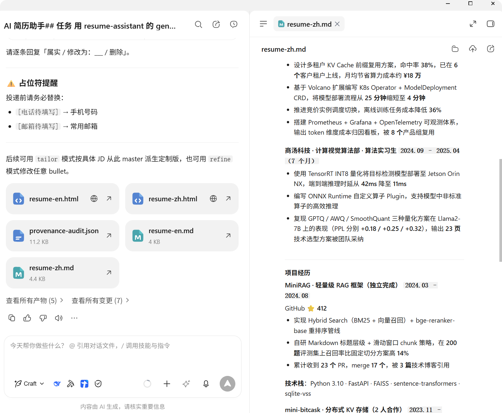
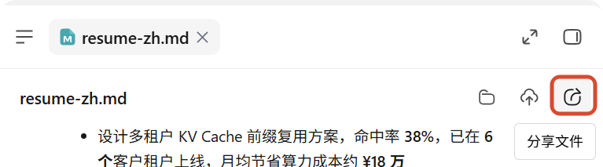
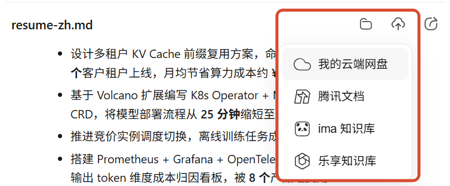
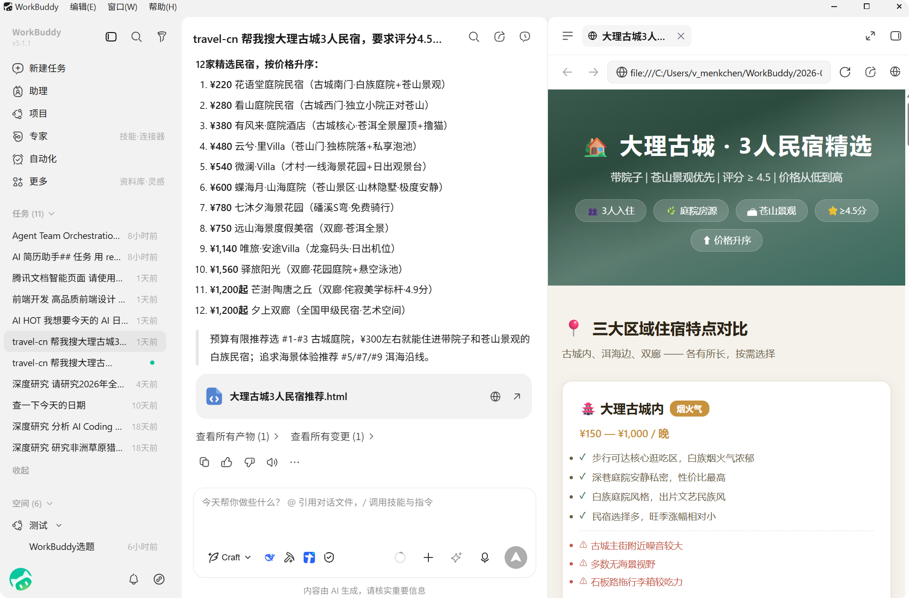
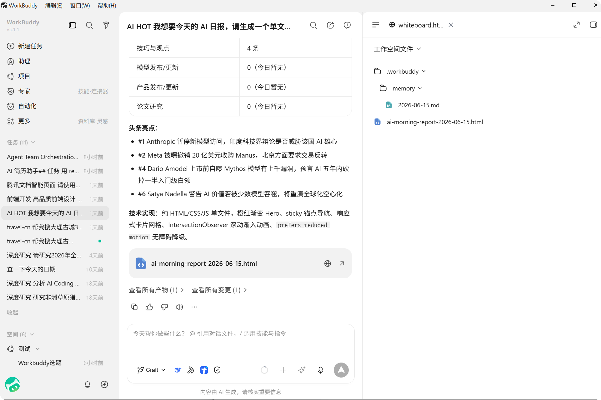
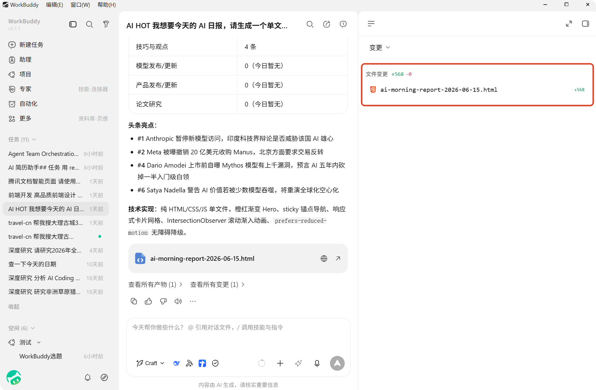

结果查看
右侧结果区
任务执行过程中，右侧会显示结果区，用来查看 WorkBuddy 产出的文件、代码变更和内置浏览器预览的内容。您不需要离开当前任务，就可以一边看对话，一边查看结果。
当前结果区主要提供四类内容：
- 概览：
- 工作空间文件：查看当前工作空间中的文件内容
- 浏览器：查看网页或可直接打开的结果页面
- 变更：查看本次任务带来的文件修改
- 产物：查看任务生成的文件和交付物
这些内容都集中在同一块区域中，方便您来回切换和对照。
产物
当任务生成文件、表格、文档或其他可交付内容时，您可以在 产物 中统一查看和分享。
适合在这里查看的内容包括：
- 文档类结果（Word、Markdown、PDF 等）
- 表格类结果（Excel、CSV 等）
- 演示文稿（PPT）
- 分析报告
- 自动生成的交付文件

产物分享
在预览产物文件时，点击右上角分享图标：

上传到云端
支持上传到我的云端网盘、腾讯文档、ima 知识库、乐享知识库，在其他端的应用内也可以查看。

网页预览
如果任务生成的是网页、页面原型或本地启动的 Web 应用，您可以在内置浏览器中直接查看效果。
内置浏览器通常会提供：
- 当前页面地址
- 刷新入口
- 页面内容的实时查看
这适合用于确认页面结构、样式和交互结果是否符合预期。

工作空间文件
工作空间文件 用于查看当前工作空间中的文件内容，适合在不离开任务的情况下直接浏览产出文件。
这一视图通常包含：
- 左侧文件列表或文件树
- 右侧文件内容区域
- 顶部已打开文件的切换栏
适合用来：
- 快速查看某个生成文件的完整内容
- 对照不同文件之间的关系
- 检查任务是否写入了正确的位置

变更
变更 视图用于查看当前任务带来的文件修改，方便您在接受结果前先做一轮检查。
这一视图通常会显示：
- 本次修改涉及的文件列表
- 每个文件的改动情况
- 选中文件后的具体变更内容
如果任务涉及代码开发、脚本生成或配置调整，建议优先在这里确认改动是否符合预期。
